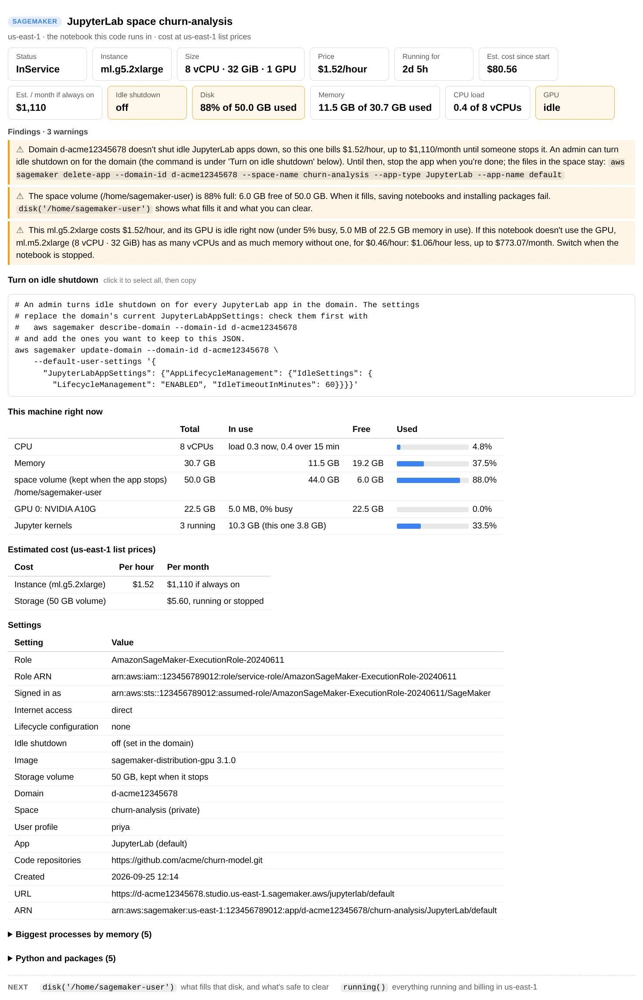
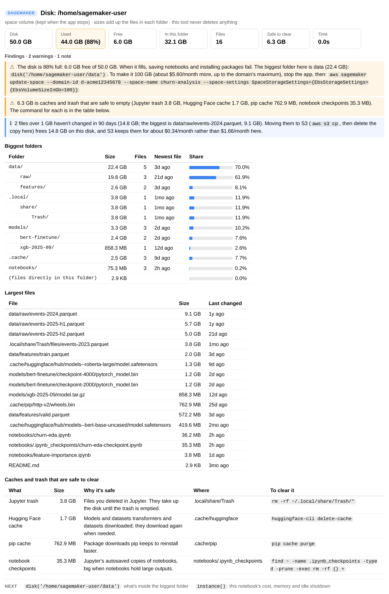
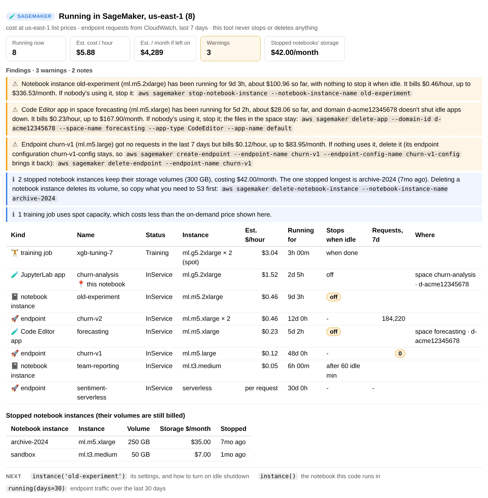

Contents
aws-analyzer · sagemaker_env.py
Know the SageMaker notebook you're working in
One Python file. Run it in a notebook and see what the notebook is and what it's costing you, whether it stops when you walk away, how full its memory, disk and GPU are, what's filling the disk, and which notebooks, apps and endpoints in the region are still running.
- One file, boto3 only
- Read-only: never stops or deletes anything
- Notebook instances and Studio
- Plain text outside Jupyter
The examples run in a Studio JupyterLab space called churn-analysis, in the domain d-acme12345678, on an ml.g5.2xlarge. The same commands work on a notebook instance, where the notebook's name takes the place of the space. The screenshots are real output from the tool, run against a simulated SageMaker and machine with synthetic data.
Set up in SageMaker
-
Get
sagemaker_env.pynext to your notebook. Pick whichever works in your environment:- Upload it. Download sagemaker_env.py, then drag it into JupyterLab's file browser, in the same folder as your notebook.
- Fetch it from a cell, if the notebook can reach the internet:
!curl -sO https://raw.githubusercontent.com/utkarsh5026/aws-analyzer/main/analyzers/sagemaker_env.py - Copy it from S3, for a notebook with no internet access (VPC-only mode). Upload it to a bucket once, then:
!aws s3 cp s3://acme-ml-data/tools/sagemaker_env.py . - Or paste the whole file into a notebook cell and run it.
-
Import it and create the view. It uses the notebook's IAM execution role and region, so there's nothing to configure.
from sagemaker_env import SageMakerView ui = SageMakerView() # uses the notebook's IAM role and region ui.help() # every command, grouped by task; ui.help("disk") shows one in full -
Optional: another region or AWS profile, or plain-text output.
from sagemaker_env import SageMakerAnalyzer, SageMakerView ui = SageMakerView(SageMakerAnalyzer(region="eu-west-1", profile="dev")) ui = SageMakerView(mode="text") # plain text, e.g. in a terminal or a script ui = SageMakerView(progress="plain") # a plain progress line instead of tqdm bars ("off": none)
Why not sagemaker.py? The SageMaker Python SDK is imported as sagemaker, so a file with that name next to your notebook would hide it. sagemaker_env.py lives happily beside the SDK.
Five-minute tour
Three commands cover most questions. Each prints a report under the cell; none of them change anything.
ui.instance() # this notebook: type, cost so far, idle shutdown, memory, disk
ui.disk() # what fills the disk, and what's safe to clear
ui.running() # everything billing in the region, and what looks forgotten
ui.instance("old-experiment") # another notebook instance, or a Studio space, by nameReading a report. Every report puts the answer first: cards with the numbers that matter (a card turns amber when a finding is about it), then the findings, warnings first, each ending in what to do. The tables of detail come after, and at the bottom a Next row of two or three commands with the arguments filled in, such as disk('/home/sagemaker-user/data'). One click on a command anywhere in a report, or on a code block, selects all of it, ready to copy.
instance() and disk() look at the machine they run on, so run them in the notebook you want to know about. running() and instance("name") only ask AWS, so they work from anywhere, including your laptop.
This notebook
instance() finds out where it's running from SageMaker's own metadata file, /opt/ml/metadata/resource-metadata.json, then asks SageMaker about that notebook instance or Studio app and looks at the machine itself. The cards answer the usual questions in one line each:
- What is it and what does it cost? The instance type with its vCPUs, memory and GPUs, the price per hour, how long it has been running, what that cost so far, and what a month of it costs if it's never stopped.
- Will it stop by itself? Whether anything shuts it down when it sits idle, and after how long.
- How busy is it? Memory in use, the disk your notebooks live on, the CPU load over the last 15 minutes, and the GPU.
ui.instance()
ui.instance() in the churn-analysis space: the GPU has done nothing for this session, and nothing will stop the app tonight.Below the findings come the details:
- This machine right now: CPU load, memory, each disk (and whether it survives a stop: on a notebook instance only
~/SageMakerdoes, in Studio the space's home folder does), GPU memory and use, and the Jupyter kernels with the memory they hold. - Estimated cost: the instance per hour and per month, and the storage volume, which is billed whether the notebook runs or not.
- Settings: the execution role, who AWS sees you as, internet access, lifecycle configuration, the image or platform, the storage volume, and the space, user profile and domain.
- Folded away: the biggest processes by memory (to find the kernel that holds 5 GB) and the Python and package versions.
The findings look for money spent on nothing and for trouble ahead: no idle shutdown; a disk or memory more than 85% full, and the other kernels holding memory you could free; a GPU that's idle, with the CPU type that has the same vCPUs and memory and what it saves; an instance far bigger than what it's using; Amazon Linux 1. Each finding ends in the command or setting that fixes it.
Another notebook
Pass a name to see another notebook's settings and cost: a notebook instance, or a Studio space. When two domains have a space with the same name, write domain-id/space. A machine can only be read from inside it, so these reports have no "right now" section.
ui.instance("old-experiment") # a notebook instance
ui.instance("forecasting") # a Studio space, running or not
ui.instance("d-acme12345678/forecasting") # the space in one domainStop paying for idle time
A notebook bills for every hour it's running, whether anyone is using it or not. An ml.g5.2xlarge left on over a weekend costs about $100. SageMaker can stop an idle notebook, but it isn't on by default, and instance() tells you which case you're in:
Notebook instances
There's no setting. The usual way is a lifecycle configuration that runs AWS's auto-stop-idle script. instance() reads the notebook's lifecycle script to see whether it stops it, and after how long.
Studio JupyterLab and Code Editor
Idle shutdown is a domain setting (an admin turns it on), and a space or user profile can change the timeout. instance() reads all three.
Studio Classic
Kernel apps have no idle shutdown. Shut them down from the Running Terminals and Kernels panel when you're done.
When nothing stops the notebook, the report adds a Turn on idle shutdown (or Turn on auto-stop) block with the commands, ready to copy. The tool shows them and never runs them. For a Studio domain it looks like this:
# An admin turns idle shutdown on for every JupyterLab app in the domain. The settings
# replace the domain's current JupyterLabAppSettings: check them first with
# aws sagemaker describe-domain --domain-id d-acme12345678
# and add the ones you want to keep to this JSON.
aws sagemaker update-domain --domain-id d-acme12345678 \
--default-user-settings '{
"JupyterLabAppSettings": {"AppLifecycleManagement": {"IdleSettings": {
"LifecycleManagement": "ENABLED", "IdleTimeoutInMinutes": 60}}}}'Until then, stopping the notebook yourself works just as well. Your files stay: a notebook instance keeps its volume, and a Studio space keeps its home folder.
aws sagemaker stop-notebook-instance --notebook-instance-name old-experiment
aws sagemaker delete-app --domain-id d-acme12345678 --space-name churn-analysis --app-type JupyterLab --app-name defaultWhat fills the disk
A full disk shows up as a notebook that won't save or a pip install that fails halfway. disk() measures the folder your notebooks live in (~/SageMaker on a notebook instance, /home/sagemaker-user in Studio) and shows:
- how full the disk is, and how much this folder holds;
- the biggest folders as a tree three levels deep, with a bar for each one's share;
- the biggest files and when they last changed;
- the caches and trash that are safe to clear, each with the command that empties it: Jupyter's trash (files you deleted in JupyterLab keep using the disk until it's emptied), pip and conda caches, Hugging Face and PyTorch downloads, and notebook checkpoints.
ui.disk() # where your notebooks live
ui.disk("~/SageMaker/data") # one folder
ui.disk("/", limit=None) # the whole system disk, however many files
ui.disk(): 3.8 GB of it is a file deleted in JupyterLab weeks ago, still sitting in the trash.When the disk is nearly full, the finding also gives the command that makes the volume bigger and what the extra space costs a month. A volume can grow but never shrink. Big files that haven't changed in 90 days are cheaper in S3: about $0.023 per GB-month, against $0.112 for a Studio space's volume and $0.14 for a notebook instance's.
disk() reads only local files, stays on one disk and doesn't follow links. It stops after 200,000 files by default and says so; limit=None measures everything.
Everything that's running
running() lists everything SageMaker bills by the hour in the region: notebook instances, Studio apps (JupyterLab, Code Editor and Studio Classic kernels), endpoints, and training and processing jobs in progress. For each one it shows the instance, the price per hour, how long it has been running and whether it stops when idle. For endpoints, it adds how many requests they served over the last 7 days, from CloudWatch. Stopped notebook instances get a table of their own, because their storage is still billed.
ui.running()
ui.running(days=30) # endpoint traffic over 30 days
ui.running(metrics=False) # skip CloudWatch
ui.running(): a forgotten notebook, a forgotten app and an unused endpoint add up to about $590 a month.The findings point at what looks forgotten, each with the command that stops it:
- notebooks and apps running for over 12 hours with nothing to stop them when idle (never the notebook you're running in), with what they've cost so far;
- endpoints that got no requests in the window, with the command that deletes one and the one that brings it back from its endpoint configuration;
- the storage that stopped notebook instances keep, and which one has been stopped longest.
Use the data in Python
Every report has a data version on ui.core (a SageMakerAnalyzer) that returns dataclasses and DataFrames instead of printing.
sm = ui.core
report = sm.instance() # InstanceReport: .env, .notebook, .machine, .identity
report.notebook.instance_type, report.notebook.idle # ('ml.g5.2xlarge', 'off')
report.machine.memory_share # 0.37
report.machine.gpus # [GPUInfo(name='NVIDIA A10G', busy=0.0, ...)]
sm.notebook("old-experiment") # NotebookInfo for another notebook instance or space
sm.environment() # Environment: where this code runs
sm.machine() # Machine: this machine right now (local reads only)
d = sm.disk("~/SageMaker", limit=None) # DiskReport
d.largest[:5], d.clearable # the biggest files, caches you can clear
d.to_df() # one row per folder
r = sm.running(days=30) # RunningReport: .resources, .stopped, .errors
r.to_df() # one row per notebook, app, endpoint and jobThe analysis functions don't call AWS, so they work on responses and text you already have: parse_metadata, parse_notebook_instance, parse_app, apply_studio_settings, studio_idle, lifecycle_idle, parse_endpoint, parse_training_job, parse_processing_job, parse_meminfo, parse_loadavg, parse_gpus, hourly_price, describe_instance, notebook_costs, smaller_type, idle_shutdown_commands, stop_command, and the findings, instance_findings, disk_findings and running_findings.
from sagemaker_env import describe_instance, hourly_price, smaller_type
hourly_price("ml.g5.2xlarge") # 1.52
describe_instance("ml.g5.2xlarge") # '8 vCPU · 32 GiB · 1 GPU'
smaller_type("ml.m5.4xlarge", vcpus=2, memory_gib=6) # 'ml.t3.large'Cost and what's measured
Prices are list prices
us-east-1 on-demand, read from the AWS Price List API on 2026-09-27. An instance type costs the same per hour as a notebook, a Studio app, an endpoint or a job.
Cost so far is an estimate
The price per hour times how long it has run: since boot for this notebook instance, since the app started in Studio, and since the last change (about its last start) for another notebook instance.
Usage is a snapshot
CPU load is the 15-minute average and memory is what's in use now, so a suggestion to downsize says "if that's typical".
Nothing is billed to look
The SageMaker calls are free. CloudWatch's GetMetricData for endpoint traffic costs a fraction of a cent.
INSTANCE_TYPES holds the price per hour of 134 instance types, with their vCPUs, memory and GPUs, and SAGEMAKER_PRICES adds storage per GB-month. For another region, a discount or a Savings Plan, pass your own prices; every report says whether it used list prices or yours. A type that isn't in the table shows its cost as unknown rather than a guess.
ui = SageMakerView(SageMakerAnalyzer(prices={"ml.g5.2xlarge": 1.21, "space_storage": 0.12}))Spot training jobs cost less than the on-demand price shown, and running() says which ones use spot.
Permissions
Everything is read-only. Anything the notebook's role can't read shows up as a note (or a ? on a card) instead of an error, and the rest of the report still works. disk() only reads local files, and finding out who you're signed in as needs no permission. The AmazonSageMakerFullAccess managed policy, which many execution roles have, already includes the sagemaker: actions. This policy covers every command:
{
"Version": "2012-10-17",
"Statement": [
{
"Sid": "ReadNotebooksAndStudio",
"Effect": "Allow",
"Action": [
"sagemaker:ListNotebookInstances", "sagemaker:DescribeNotebookInstance",
"sagemaker:DescribeNotebookInstanceLifecycleConfig", "sagemaker:ListDomains", "sagemaker:DescribeDomain",
"sagemaker:DescribeUserProfile", "sagemaker:ListSpaces", "sagemaker:DescribeSpace",
"sagemaker:ListApps", "sagemaker:DescribeApp"
],
"Resource": "*"
},
{
"Sid": "ReadEndpointsAndJobs",
"Effect": "Allow",
"Action": [
"sagemaker:ListEndpoints", "sagemaker:DescribeEndpoint", "sagemaker:DescribeEndpointConfig",
"sagemaker:ListTrainingJobs", "sagemaker:DescribeTrainingJob",
"sagemaker:ListProcessingJobs", "sagemaker:DescribeProcessingJob"
],
"Resource": "*"
},
{
"Sid": "ReadEndpointTraffic",
"Effect": "Allow",
"Action": "cloudwatch:GetMetricData",
"Resource": "*"
}
]
}| Command | Needs |
|---|---|
instance() on a notebook instance | DescribeNotebookInstance, DescribeNotebookInstanceLifecycleConfig |
instance() in Studio | DescribeApp, DescribeSpace, DescribeDomain, DescribeUserProfile |
instance("space name") | also ListDomains, ListSpaces, ListApps |
running() | the List and Describe actions for notebook instances, apps, endpoints and jobs, DescribeDomain, and cloudwatch:GetMetricData for endpoint traffic |
disk() | nothing: it reads local files |
Troubleshooting
“Not a SageMaker notebook”
There's no /opt/ml/metadata/resource-metadata.json on this machine, which every SageMaker notebook instance and Studio app has. You're probably on your laptop or in a training or processing container. ui.instance("name") and ui.running() still work from anywhere.
Idle shutdown shows “?”
The role can't read the domain (sagemaker:DescribeDomain) or the notebook's lifecycle configuration (sagemaker:DescribeNotebookInstanceLifecycleConfig). The findings say which one. Compare the role with the policy above.
“Auto-stop: off”, but our lifecycle script does stop the notebook
instance() recognizes AWS's auto-stop-idle sample, and scripts that mention autostop or call stop-notebook-instance. A script that stops the notebook some other way isn't recognized, so check it yourself.
There's no GPU card on a GPU instance
The report reads the GPU with nvidia-smi. If the image doesn't include it, the findings say the GPU couldn't be read, and the rest of the report is unaffected.
The disk shows “EFS, grows as needed”
In Studio Classic your home folder is on Amazon EFS, which has no fixed size, so it can't fill up. EFS bills for what's stored, which disk() still measures.
The costs don't match my bill
The estimates use us-east-1 on-demand list prices. Other regions, Savings Plans and discounts change them: pass your own with SageMakerAnalyzer(prices={...}). The "cost so far" of another notebook instance counts from its last change, which is only about when it last started.
The report lost its formatting after I reopened the notebook
JupyterLab strips the report's styles from saved output when a notebook is reopened. Run the cell again to get the formatted report back.
Command reference
Every SageMakerView command. ui.help() prints the same list grouped by task, and ui.help("disk") shows one command's full description.
| Command | What it shows |
|---|---|
instance(name=None) | This notebook (or another notebook instance or Studio space): type, cost so far, idle shutdown, CPU, memory, disk and GPU use now, role, network, findings |
disk(path=None, top=20, limit="200k") | How full the disk is, the biggest folders and files, and the caches and trash that are safe to clear |
running(metrics=True, days=7) | Everything billing by the hour in the region, the stopped notebook instances' storage, and what looks forgotten |
help(command=None) | This list, grouped by task; help("name") shows one command in full |